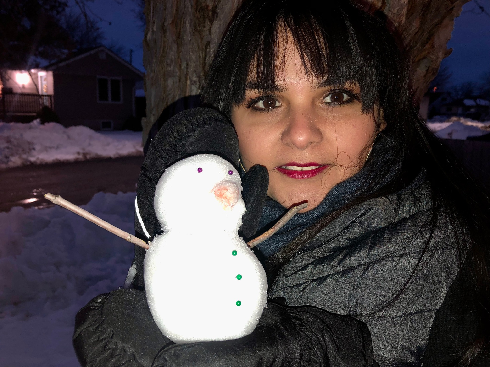
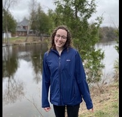

Meet the Team
Available Resumes and Links to Professional Websites
Laura Jaimes Carolina Arguello
Laura C. Jaimes is a GIS analyst and geologist with assertive communication and critical, adaptable thinking. She has acquired solid skills in cartography, spatial analysis, and data presentation.
ResumeAlison Cooke

Alison has an honours degree in History and a can-do attitude when it comes to map making. Though numbers are not her thing, she can symbolize the day lights out of a map.
ResumeEmmanuel Ignatius
Jordan is adept in handling all things map-related and has navigated the seas of data to make beautiful maps. She has a background in civil engineering, forestry, fish, and wildlife. All of this combined has created a well-rounded individual perfect for complex map-making projects.
Resume